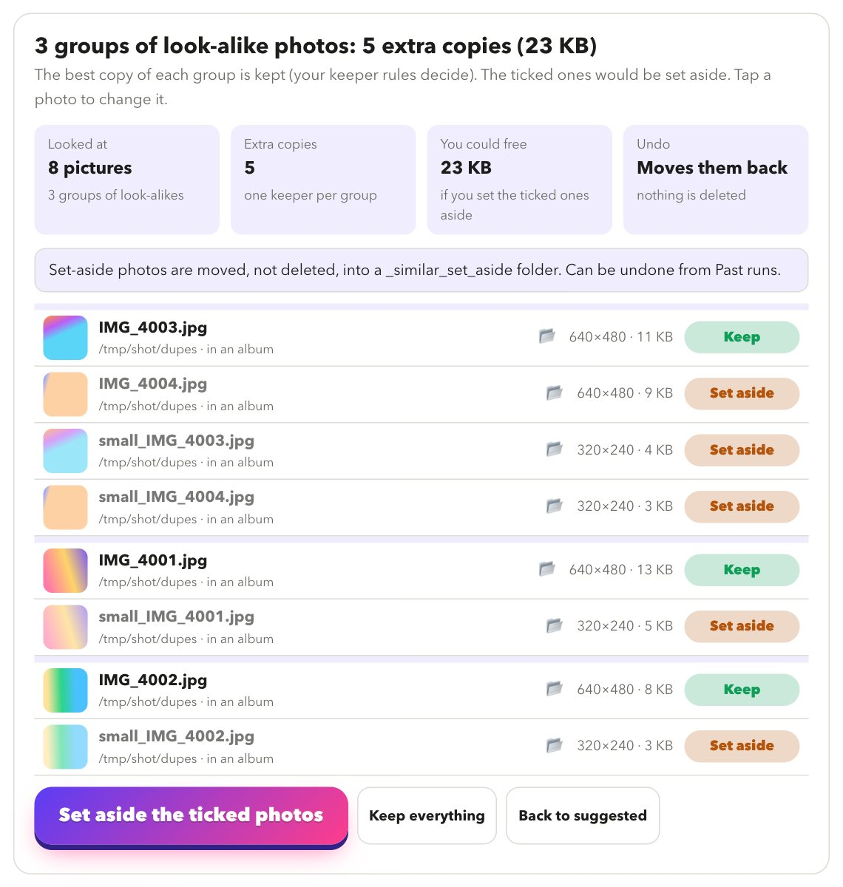
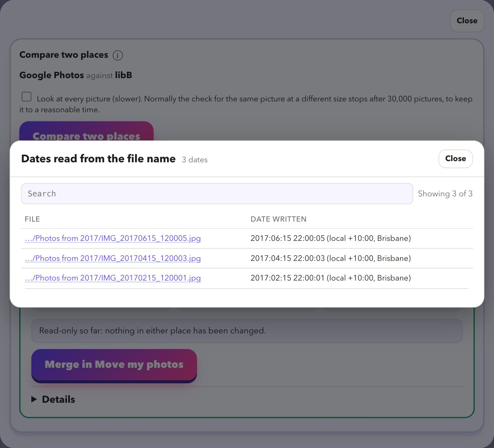

Duplicates and tidy-up
Get the whole library in order
Remove copies, review look-alikes, compare two places and clean up. Nothing is deleted without a preview and a way back.
Download for Mac
Two kinds of duplicate, two tools
Find look-alike photos
One source, no target. Finds the same picture saved twice, or at another size, and suggests a keeper using rules you choose: favourite, edited, more pixels, bigger file, more information, in an album. Bursts are kept by default. Never deleted automatically.
Compare two places
Two sources, side by side: what is identical, what is the same file in another folder, same name but different, same picture at a different size, and what only one side has.
Compare two places, then clear what is the same
Give it two folders or libraries, for example a source and the copy you made of it. It shows how alike they are, then lets you clear the identical files from one side.
- Set aside in a folder (the safest), move to the Trash, or delete for good (you type DELETE).
- Only files that are the same in both places. Every file is compared byte for byte with its twin just before it is removed, and is only removed if the twin is still there.
- The other side is never touched, and it will not clear an Apple Photos library (do that inside Photos).
- A list of everything removed is saved.

Clean up
Tidy up leftovers
Clears empty files, wrongly named and temporary files, leftover folders and odd names.
Videos won't play
Turns old video formats into MP4. Each conversion is verified before the original is replaced.
Blurry and screenshots
Spots blurry pictures and screenshots so your keeper rules can prefer the sharp one.
Count my photos
How many photos and videos, how big, and what is in your folders by type and by folder.
Health score for your photos
A score out of 100 with a plain list of what is wrong, and a button to the tool that fixes it. It keeps a history so you can see whether your library is getting tidier.
- Duplicate files, and the same file saved in several formats.
- Empty (0-byte) files, wrongly named files, temporary and leftover files.
- Look-alike folders, such as
Japan 2025anddelete-Japan 2025. - Old video formats, and files only in iCloud Drive that are not on this disk.
- Photos with no date, and an estimate of the space you could win back.
Look at your library for free
Download it, point it at your photos, and read the preview. That costs nothing and changes nothing.
Download for MacFree · Apple silicon Macs · signed and checked by Apple